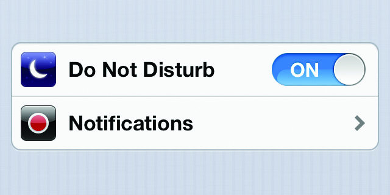

Enter the Writers
Online-Offline
By Marian Cousijn
For Enter the Writers, Marian Cousijn researched how our lives are divided into online and offline, both inside and outside the art world. These articles, which previously appeared as blog posts, are presented here as a triptych.
Always online?
I don’t really have a policy for being online. Sometimes I'm happy to leave my phone at home the whole day; the next day I may mindlessly check my phone every half minute or so to see if a new (and usually totally unimportant) message has arrived. Before I know it, I have disappeared for 45 minutes into the vortex called social media. In fact, the latter scenario is more common. The Internet can destroy my focus: when I really need to concentrate, unplugging the router is sometimes the only thing that works.
I am researching the theme 'online-offline' for Enter the Writers, which led to a discussion at our first meeting on the subject. Paulien Dresscher, head of new media at Cinekid and curator of the MediaLab, said that the very first thing she does after opening her eyes in the morning is to check her e-mails. She does not understand people who suddenly stop responding during a WhatsApp conversation. Conversely, writer Dirk Vis described a shelf in his house where he stores his phone: if he really needs the thing he has to walk there to get it. I wanted to know more about both of these approaches.
Paulien: The freedom of always being available
If I mail Paulien, she replies within a few minutes. When can I call? Anytime, actually. Like this afternoon, while she was driving in the car. Paulien: “In 1996 I got my first mobile phone. I found it so extraordinary that I could call while lying on the beach! People who arrive at work at nine who haven’t read their mail yet: I find it really incomprehensible.” It was not a conscious decision on her part to always be accessible; it has just evolved that way. “It's part of my job. And besides that I live on a ship, so I didn’t even have a landline. The very fact that I am almost always reachable gives me a lot of freedom. It is also a question of time management: if I work a lot during a flight, then I have time left for other things.”
Paulien remains online even during her holidays. “We often vacation on our boat, so I use apps to navigate. But I also check my work e-mail. This means I can take three weeks of vacation. It only complicates things if I'm not available.” Is she really always online? “I also recognise that it's not good to be immersed in an online bubble all day long. I consciously don't take out my telephone when I'm on the ferry to Amsterdam North: I just look around me. And during meals I also put it away, to be social with my family. Sometimes my online habits are disastrous by the way: at work recently I was clicking mindlessly on a funny video that popped up and it turned out to be a virus. It was sent to all my contacts, and I had to change my passwords. I definitely got a taste of my own medicine!
Dirk: Sometimes you just don't feel like it
And when can I ring Dirk? He mails me back: “I always turn on my iPhone between 19:00 and 19:02.” He’s joking of course, but Dirk clearly has a different policy than Paulien. At home, his phone is never within reach, there are hardly any apps, and all notifications are turned off. Today he had it turned on especially because he knew I would call.
Dirk: ”Discipline is very important if you want to write. With some things, like reading, I allow myself to be completely indulgent. But in other areas I make rules for myself. The phone doesn't enter my bedroom anymore, and I turn it on in the morning only after I've had a coffee and read a few articles.
I have all of the notifications turned off: I want to decide when I look at my phone, instead of my phone dictating that by sending me messages.”
Dirk got the idea of the ‘phone shelf’ while working as a supervisor at a children's holiday camp. “The kids there don’t use electricity throughout the week. The supervisors are allowed to carry phones, but they are stowed in a box and used only when absolutely necessary, for example to call your loved one.” Do Dirk’s friends find it annoying that he so often unreachable? “No, they disconnected even before I did. I also noticed that sometimes they just didn’t respond to my messages, and then I thought: “Oh yes, that's actually just fine.” If someone rings your doorbell, like a Jehovah's Witness or someone trying to sell you something, you often don't feel like opening the door. So why do you need to react immediately when someone calls you?”
Considering my own shelf
I recognise a lot of myself in both stories. But unlike Paulien, I don’t use my time online so efficiently. I don’t really want to answer e-mails yet if I'm still lying in bed. So why do I open them then? Out of habit, out of boredom, or because I'm a little addicted? Maybe it's also something for me, this telephone shelf.
Hiding in a cosy tent
You are safe in an automobile during a thunderstorm, even when lightning strikes. That's because an auto is a 'Faraday cage', made of electrically-conductive material that blocks electric fields outside the cage.
This physical principle also applies to electromagnetic radiation fields such as GSM and Wi-Fi networks. They are invisible, but we spend our days surrounded by them. The Faraday cage acts as a shield against this radiation. Sarah van Sonsbeeck took this fact as the starting point for a series of artworks. She is often busy with silence in her work: what are the spatial aspects of silence, and to what extent does noise affect your privacy?
Cell phones are perhaps the greatest silence disruptors of our time. In an interview, Van Sonsbeeck explains: “I noticed that I was busy with the thing all day, just like my friends and my partner. We are surrounded at all times by an invisible noise. That's why I made the Faraday Bag: a portable form of silence.” When you put your phone in the bag, you are no longer accessible. The label reads: “This bag is made from Faraday fabric, a democratic instrument for data silence.”
Of course, you can always turn your phone off. But this work of art makes you think: to what extent do we have a right to silence? In fact, the Faraday Bag accidentally turned out to be illegal, which for Van Sonsbeeck made it an even better artwork: “What happens inside a Faraday cage is uncontrollable. That means you also can also use it to steal, as it will not set off the magnetic doors in shops. That the bag turned out to be illegal says something about our fears and the need to monitor and scan everything.”
The reverse is also true. Putting your wallet into the bag protects you against crowd hacking, a wireless variation of pickpocketing. Just as you can pay wirelessly using your debit or smart card, they can also be emptied wirelessly.
Van Sonsbeeck also made a tent using the same material. I saw this Faraday Tent (2011) at an exhibition: a small, simple, old-fashioned tent made of thin silver fabric. But despite its cosiness, the tent is a hi-tech political protest about the right to not always be traceable and accessible. This tent is just about the only place where you can't be traced via your phone. But you can, of course, have a good conversation with someone standing next to the artwork.
Smartphone Terror
Smartphone terror in the museum? It's not always what it seems.
A group of students sit on a museum bench, engrossed in their smartphones. In the background is The Night Watch, but none of the adolescents grant Rembrandt's masterpiece as much as a glance. The photo (taken by art historian and journalist Gijsbert van der Wal in 2014) went viral on social media, accompanied by gloomy captions. “You see: technology is the end of civilisation!”; “A disappointing metaphor for our society!”; “What’s wrong with today's youth: so addicted to their dumb smartphones that they would rather stare listlessly at a screen than look at true beauty?”
But the actual story was that the children had first looked extensively at the painting, and were at the time of the photograph immersed in an assignment using the Rijksmuseum's app that provides additional information about the artwork.
This reminds me of a story that a colleague at the Stedelijk Museum once told me. One day, the famous rapper Usher graced the Stedelijk with a visit. He had to perform that night in Amsterdam, and made the admirable decision to spend a day in the modern art museum rather than visiting coffee shops in the Red Light District. He was promptly rewarded with a private tour around the collection.
The rapper seemed quite distracted: he was continuously busy with his iPhone. At a certain point, the tour arrived at the Between Screens project by the artist duo Olivier van Breugel and Simone Mudde.
The project consists of photographs taken in the main gallery of the Rijksmuseum, and shows throngs of people photographing The Night Watch with their smartphones. The critique is clear: there are great reproductions of The Night Watch, so why the urge to make your own snapshot? Or – still worse – a selfie taken by turning one’s back on the masterpiece and simply degrading it to a backdrop. The accompanying text states: “Capturing everything is lethal to the memory, it makes us into robots, even lazy robots, who can reproduce perfectly but because of that reproduction have nothing more to say.”Usher’s girlfriend, who had participated actively in the tour and kept asking interested questions, responded to Between Screens by remarking on Usher’s phone behaviour: “Look darling, these people are just like you, more focused on their phone than on the art!” Usher fired back in defence. It appeared that he had been diligently taking notes about everything explained by the guides right from the beginning of the tour.
Not everything is what it seems
Personally, I always have my phone at hand when I visit a museum. As an art journalist I find it a very useful tool: I use the camera to take visual notes. A snapshot of a museum hall is a very good memory support, and with a push of a button I have a complete wall text in my pocket. I also have more time to look at the art if I don't have to jot everything down in a notebook.
I like to share the most beautiful works of art that I come across on Instagram or Twitter. Yes, I can also just search the Internet for photos of these works. But that takes a bit longer, and I also enjoy building a personal collection of art that I have seen in real life.
The sharing on social media happens later, not immediately. The ‘risk’ of using your smartphone is of course that you grab it to make a photo and before you know it you are distracted by 13 new mails and 46 unanswered WhatsApp messages while standing among the Picasso’s. But there is a very useful feature for that: the offline mode.
When I walk through the museum with my phone ready, I am well aware of how it must look. There are probably other visitors who think like the indignant commenters on Gijsbert van der Wal’s photo. The Van Gogh Museum banned photography altogether in 2014 after visitors complained of ‘smartphone terror’. I admit that I sometimes feel a bit relieved in an exhibition with a photo ban: no stress to make that perfect shot. But I also regret that I can’t share my experience and I can't add the art to my virtual private archive.
Of course the idea is not to use your smartphone so antisocially that it inconveniences your fellow visitors. But a smartphone has a lot to offer, and the sight of people staring intently at their screens is not always what it seems. And even then: so what if someone would rather play on Candy Crush than worship Rembrandt? The real problem is not that people use smartphones in museums, but the accompanying prejudices.

Faraday tent, Sarah van Sonsbeeck, Photo: Gert Jan van Rooij, De Hallen, Haarlem 2013
Smartphone terror in front of the Mona Lisa in the Louvre Museum

The Do Not Disturb function. iPhone
Back